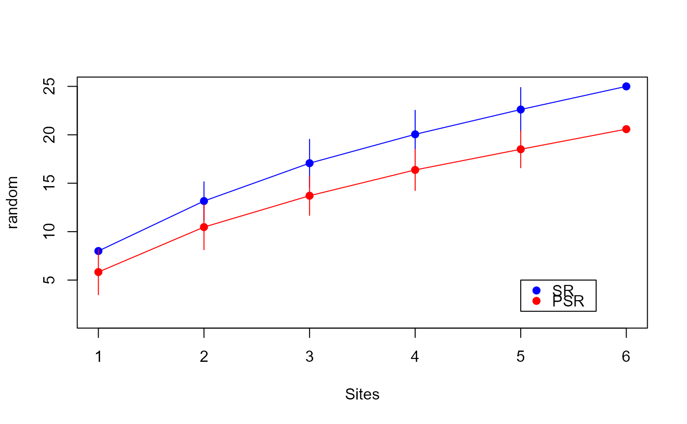

specaccum.psr.RdFinds a sample-based rarefaction curve for phylogentic species richness for a set of samples.
specaccum.psr(samp, tree, permutations = 100, method = "random", ...)Community data matrix
A phylo tree object or a phylogenetic covariance matrix
Number of permutations with method method=
"random"
Species accumulation method, currently only "random"
is supported which adds samples in random order.
Other parameters to functions
The function returns an object of class "specaccum" with
items:
Function call.
Accumulator method.
Number of sites/samples.
The mean phylogenetic species richness corresponding to number of sites/samples.
The standard deviation of phylogenetic apecies accumulation
curve (or its standard error) estimated from permutations in method =
"random".
Permutation results with method = "random"
and NULL in other cases. Each column in perm holds one permutation.
Gotelli N.J. & Colwell R.K. (2001) Quantifying biodiversity:
procedures and pitfalls in the measurement and comparison of species
richness. Ecology Letters, 4, 379-391
Helmus M.R., Bland T.J.,
Williams C.K. & Ives A.R. (2007) Phylogenetic measures of biodiversity.
American Naturalist, 169, E68-E83
data(phylocom)
accum.sr<-specaccum(phylocom$sample, permutations = 100, method = "random")
#> Set of permutations < 'minperm'. Generating entire set.
plot(accum.sr, col="blue")
points(accum.sr$sites, accum.sr$richness, pch=19, col="blue")
accum.psr<-specaccum.psr(phylocom$sample, phylocom$phylo, permutations = 100, method = "random")
plot(accum.psr, add=TRUE, col = "red")
points(accum.psr$sites, accum.psr$richness, pch=19, col="red")
legend(5,5,legend=c("SR","PSR"),pch=c(19,19),col=c("blue","red"))
